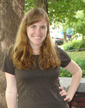

Check out the First Hackathon's website to see who won and what it was like.
Check out the First Hackathon's website to see who won and what it was like.


Build a hardware or software project from idea to prototype in a weekend!
You can participate individually or as a team.
June 8-10th, 2012.
The event will start at 6pm on Friday 6/8 and end at 6pm on Sunday 6/10.
The wonderful people at Advertising.com have welcomed us to their location in Tide Point!
1020 Hull Street, 1st Floor Ivory Building, Baltimore, MD 21230
Bring the community together and have a good time. And, we'll throw in some prizes as the icing on the cake, too.
The rules are simple. You have a weekend to build a hardware or software project. The four judging areas are in technical difficulty, design thinking, aesthetics, and civic service. Check out the living Rules Document and the Q&A Document.
Register and then show up at the event. Come with a team or find one when you get there.
Registration costs $10 and includes food and a t-shirt.
The winners have been announced! See them on the winner's page.
Prizes are broken up into specific categories. Judges have been selected to represent each category. The winner of each category will be awarded $500. The categories are as follows:
Did you solve world hunger using a machine learning algorithm? Did you replicate Facebook in a weekend? Whatever it is, this category is about using technical skills to solve a tough problem.
Where form meets function, innovative design can be found. This category is about not only solving a problem but solving it in a new and innovative way.
"Ask not what your city can do for you but what you can do for your city!" This category is about building something that makes your community a better place to be. We'll have some open city data for you to play with!
You may not be Picasso but you can create something that looks good, well then awesome! This category is about creating something that is easy on the eyes and makes the other designers drool.
This is all about you and who you like. Feel free to strong arm people into voting for your project.
So maybe your project wasn't technically complex, you didn't put a lot of thought into it, and everyone covers their eyes when they look at it. You just wanted to make something. It could be a guitar pedal, cookie jar alarm system, or a custom computer case. Whatever it is, it's the best one there is. Why? Because you made it.
Founder Robot Fest & DIY Expo
Founder of Robot Fest, a yearly event held at the National Electronics Museum. A “Creative Geek” who tries to connect the left and right sides of his brain while collaborating with engineers and artists. An “out-of-the-box” thinker who is constantly looking for new and fun projects to work on.
CEO, 410 Labs, Inc.

Dave Troy is a serial entrepreneur, angel investor, and community activist. He's been active in the local tech and entrepreneurial community since 1986 and has founded multiple businesses including ToadNet (now DataPoint), Beehive Baltimore, Baltimore Angels, Roundhouse Technologies, Popvox LLC, Toad Computers, and 410 Labs. He lives in Bolton Hill with his wife and two children.
Assistant Design Professor, University of Maryland, Baltimore County (UMBC)
Callie is a designer, writer, and researcher. Her research involves the aesthetics of interaction design. Form not only follows function; form improves it
Assistant Professor, University of Maryland, Baltimore County (UMBC)
Amy is an Assistant Professor of Human-Centered Computing in the Information Systems Department. Her current research focuses on exploring opportunities in the DIY Assistive Technology space, and looking at how to empower individuals to build their own assistive technologies and accessibility solutions. http://www.amyhurst.com.
Policy Analyst, City of Baltimore Mayor's Office of Information Technology (MOIT)
Daniel is a policy analyst for MOIT with a great interest in leveraging public data and our vibrant tech community to improve Baltimore. Originally from South Florida, Daniel came to Baltimore by way of Wesleyan University where he studied government. He now lives in Fells Point and can often be seen ambling around the neighborhood or playing basketball in Canton.